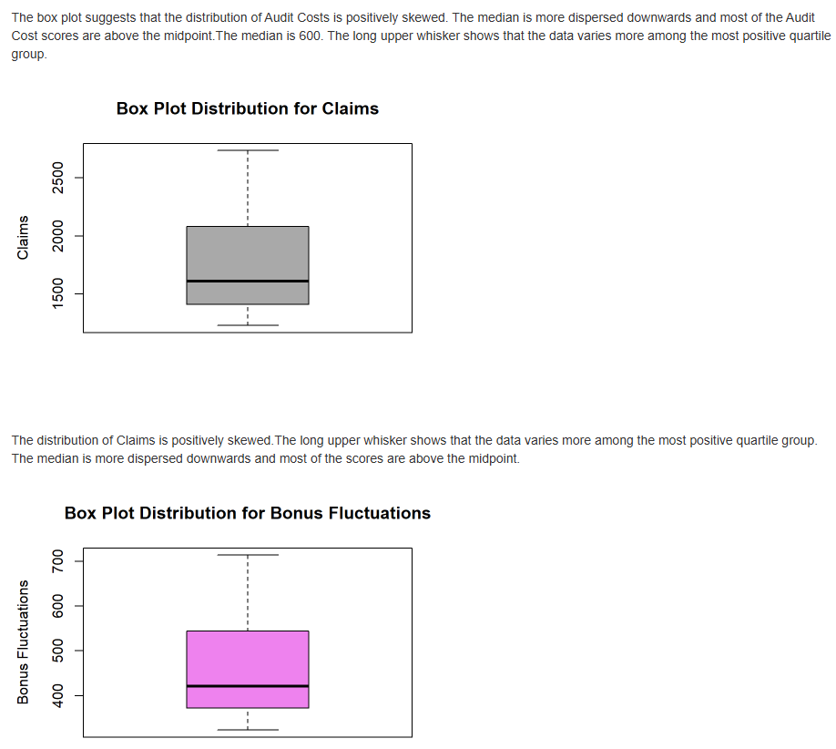
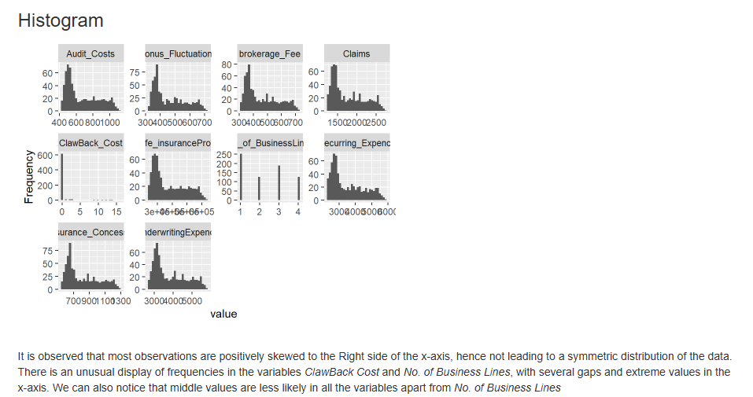
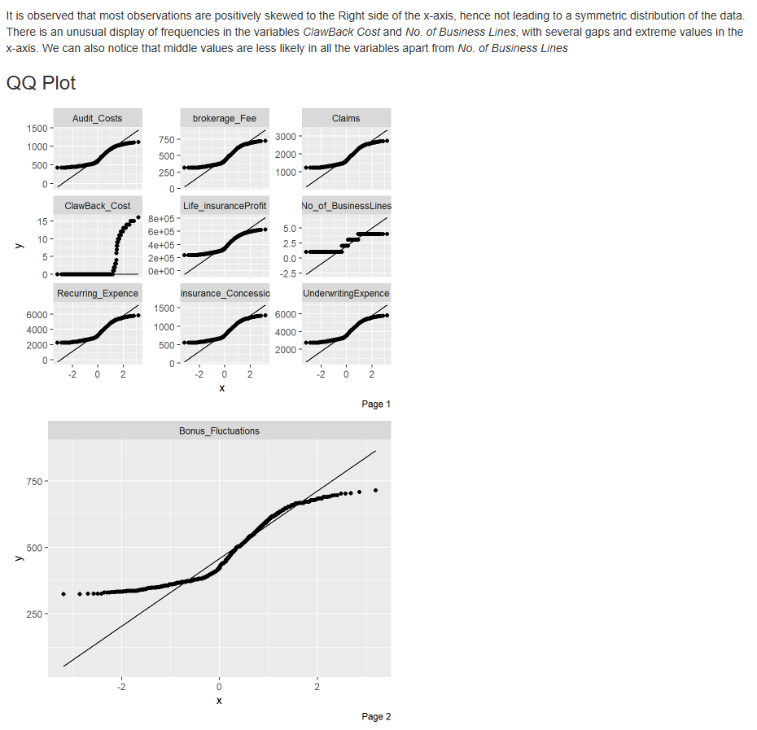
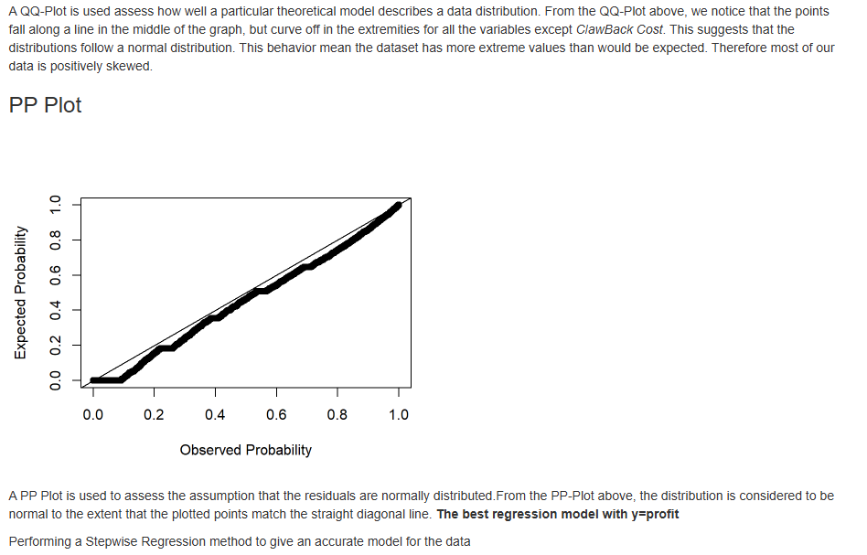
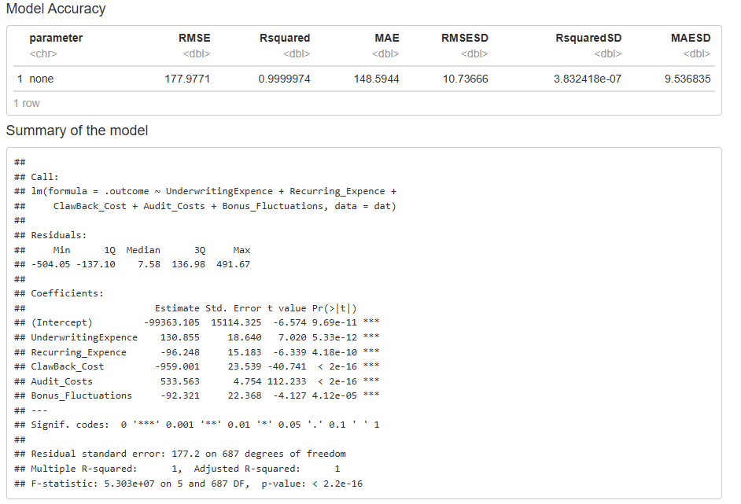
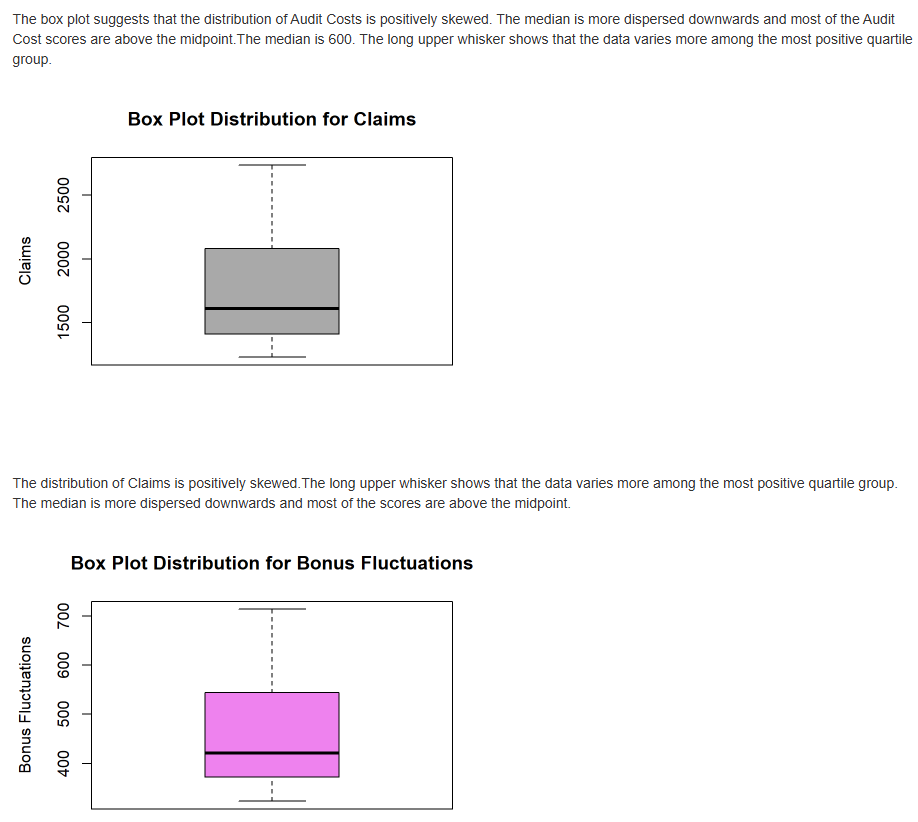
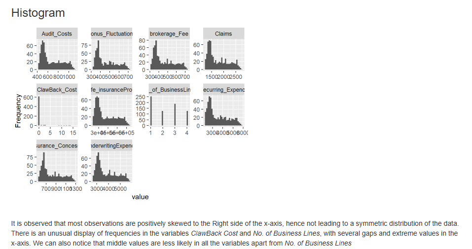
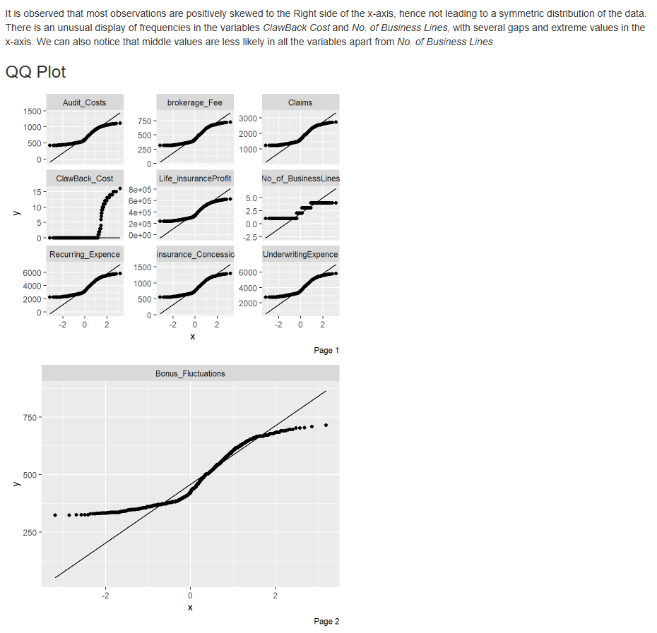
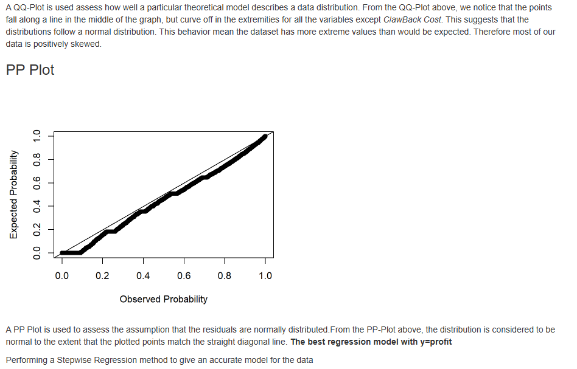
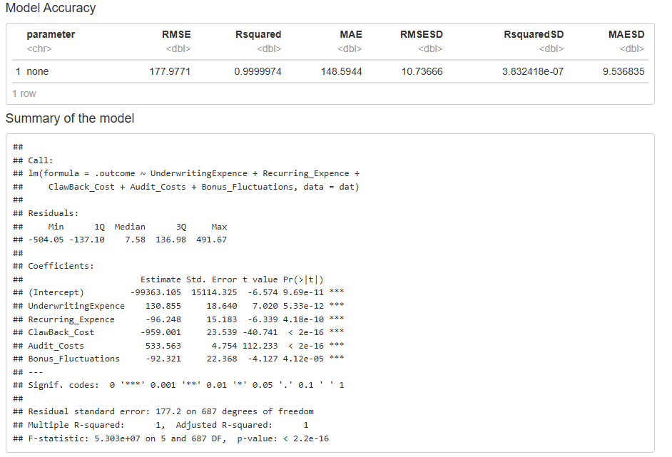

John Mark Oloo
Data Analyst & Consultant
From everyday business decisions to driving global change - let’s work together to turn your data into a powerful tool for growth and innovation.
GET IN TOUCHCollect
Coming from a background in statistics and research, I have theoretical and practical knowledge in data modeling, market intelligence analysis, survey design, impact evaluation, and monitoring. I have data collection and management experience with Kobo Toolbox, Jotform, Survey Monkey, Qualtrics, and Airtable, enabling me to deliver reliable insights.
Process
I can offer support on improving existing workflows and the creation of new processes, covering data transformation, unification, spatial and predictive analysis, and more.
Analyze
Using advanced analytics tools like R, SPSS, and Google Sheet I can uncover actionable insights from raw data. My experience includes predictive modeling, statistical analysis, and machine learning to support data-driven decision-making.
Visualize
I am a Power BI and Tableau Desktop professional with extensive knowledge in data visualization best practices. I specialize in creating interactive dashboards and static infographics that can be consumed online or in print. Besides Tableau and Power BI, I have significant experience working with Google Sheets, enabling me to deliver impactful data visualization solutions.

Portfolio
A sample of my work
Interactive Sales Depletion Insights
This is an overview of sales depletions, analyzing performance across various dimensions. The analysis enables a deep understanding of sales dynamics, identifying top-performing brands, representatives, and potential areas for improvement.
Marketing Strategies
How do you use data to analyze your marketing strategies ? In this comprehensive project report, I utilized statistical methods to analyze sales and profit data. The analysis explores trends across regions, categories, and customer segments, with insights derived from summary statistics and ANOVA tests. This project demonstrates the application of data-driven techniques to inform and optimize marketing strategies.
Analysis of Climate Change Data
Correlation does not imply Causation: A study on social media use and confidence in solving climate change. The study examined the statistical relationship between social media usage and confidence in technology to address climate change, finding a non-significant correlation.
My Skills
Power BI & Tableau
Advanced expertise in Power BI and Tableau for transforming raw data into actionable insights with compelling visuals and interactive dashboards.
R, SQL & Google Sheets
Proficient in data analysis using R, SQL, and Google Sheets to manipulate, analyze, and visualize data for business intelligence.
Survey Design
Specialized in crafting well-structured surveys and designing assessments to collect valuable, reliable data for actionable insights.
Business / Market Insights
In-depth understanding of market trends and business performance, leveraging data to provide insights that drive strategic decisions.
Alteryx
Expert in data automation and process improvement with Alteryx, enabling businesses to streamline workflows and transform data efficiently.
Demand & Supply Planning / Forecasting
Skilled in forecasting trends and managing demand and supply processes, helping organizations optimize their operations and minimize costs.
Sales Automation
Experience in automating sales processes to increase productivity, streamline customer interactions, and drive revenue growth.
Database Management
Managing and optimizing databases to ensure data integrity, security, and availability for all business operations.
Web Development
Proficient in front-end web development (HTML, CSS, JavaScript) for creating interactive, user-friendly websites and web applications.
Monitoring & Evaluation
Expert in assessing and evaluating data and processes, ensuring that projects and interventions achieve their intended outcomes.
My Projects
Interactive Sales Depletion Insights
This is an overview of sales depletions, analyzing performance across various dimensions. The analysis enables a deep understanding of sales dynamics, identifying top-performing brands, representatives, and potential areas for improvement.
Marketing Strategies
How do you use data to analyze your marketing strategies ? In this comprehensive project report, I utilized statistical methods to analyze sales and profit data. The analysis explores trends across regions, categories, and customer segments, with insights derived from summary statistics and ANOVA tests. This project demonstrates the application of data-driven techniques to inform and optimize marketing strategies.
Analysis of Climate Change Data
Correlation does not imply Causation: A study on social media use and confidence in solving climate change. The study examined the statistical relationship between social media usage and confidence in technology to address climate change, finding a non-significant correlation.
Budget Control Dashboard - Trends & Analysis
I used Tableau to visualize budget performance against both budget and last year's figures. The top section displays monthly and year-to-date (YTD) data for December 2023, comparing actuals (gray bars), budget (dark line), and last year's performance (thin blue line). Percentage variances are shown for both actuals vs. budget and actuals vs. last year, highlighting key areas of over- or under-performance. The bottom section provides a cost center breakdown, further dissecting the variances by department for both monthly and YTD figures. This allows for detailed analysis of spending patterns and identification of areas requiring attention. Filters at the top suggest the potential for interactive exploration of the data by different dimensions.
Analysis of the efficiency of overdue call routine data - Energy Sector
This Power BI dashboard provides actionable insights into customer payment patterns and evaluates the efficiency of overdue call routines. It enables monitoring of customer payments and supports the company's operational strategies to improve payment compliance.
GEID - Graduand Engagement Insights Dashboard
This is a dynamic dashboard that I developed to visualize the findings of a community engagement project involving university graduands. The analysis spans a 4-year period (2019–2023), examining engagement trends by institution, gender, and participation in various domains. Key metrics include the number of graduands, their institutional representation, and overall engagement rates, providing actionable insights into community participation.
Principal Component Analysis of Depression Data
Analysis and interpretation of the principal components to help in identifying patterns, clusters, and trends in the data.
Business Analytics & Insights
Analysis and visualization of expenses and insurance costs across various business lines.
 








